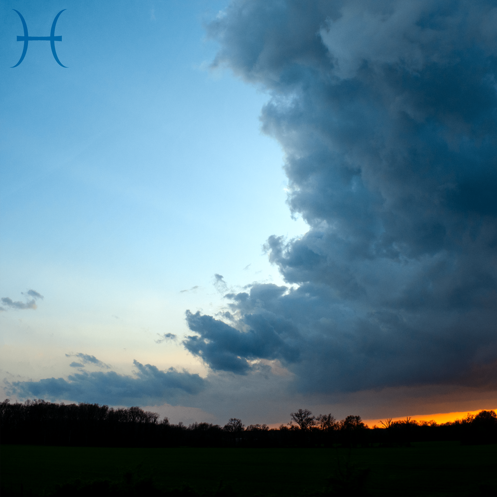
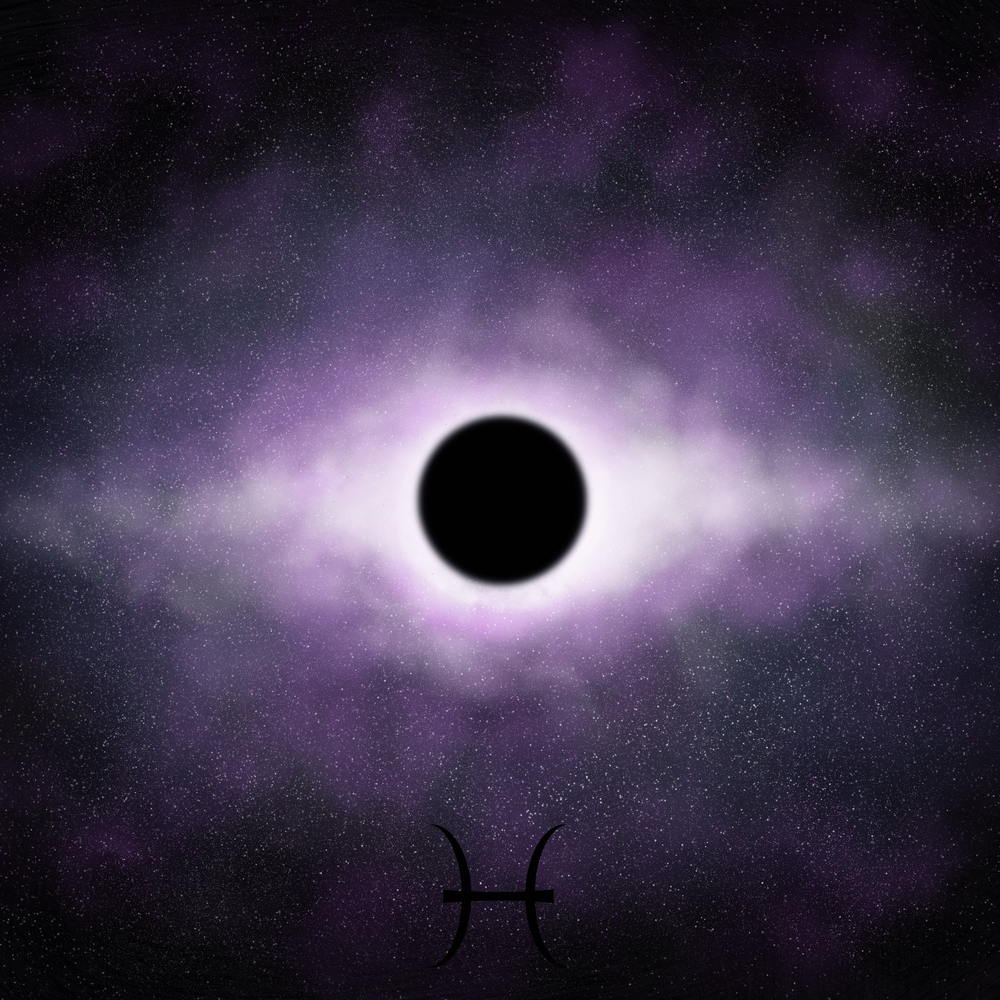

A Poem By A Non-Poet
Based on a text I sent to my father after returning home from a short vacation,
this poem somehow ended up in a pretty dark place thanks to a large amount of song lyrics.
I'm happy with it at the end of the day because despite being rather averse to poetry it still ended up having meaning,
despite also being made of random lines from random web pages.
Some of the images are probably still broken, but I'm far too inexperienced to know why.
Although I feel like that's something that could be said with 1 year or 20 years of coding experience.
A Video By A Non-Videographer
The first project I went off the rails for, which was a sign of what's to come.
What was meant to be a looping Zoom background turned into more of a 1 minute performance.
Call it a lack of other ideas, or a spark of genius. I'll just call it a completed project personally.
A Story By A Non-Author
An adaptation of a story I had previously written with some friends years ago,
although limited to only the first page or so.
As it turns out it's very hard to turn over 6 pages of a linear story into a choose your own adventure if you're already bad at writing.
It did definitely help that there's a lot of solid break points in the story.
This is like a teaser, it'll get you interested in a project that'll never happen.
A Website By A Non-Web-Dev
I really wish I wasn't using the template for this,
but I think at the end of the day a decent looking page that hits all the requirements is a good enough starting point.
There's basically no chance I learn how to do all this on my own, so I'm better off trying to learn what I can from what's already here,
and then maybe I'll come back and turn it into an actual portfolio that could land me a job.
Or maybe not. You never really know, do you?
INTO DARK
One of my two most recent tracks, and possibly the best drum and bass song I've made, which means a lot since that's what I make all the time.
Very happy with how it turned out, although I haven't been able to recreate the energy since.

Spotify
Apple Music
Youtube
FROM LIGHT
The most recent of my releases, although I made the song almost 8 months ago based on a sample my friend sent me.
All my friends said it was my best work so I released it, even though I feel like I can do better.
Sometimes you just gotta listen to the folks around you.

Spotify
Apple Music
Youtube
FARSIGHT
Farsight is a track from earlier this year that I was very happy with when I made it.
It's very different than what I'm used to making, which kinda fits this class in a way.

Spotify
Apple Music
Youtube
STARGAZING
Stargazing is from a full year ago now, it's my only EP on this alias, and I still think it's probably my best work.
Hopefully I can make something better soon.

Spotify
Apple Music
Youtube